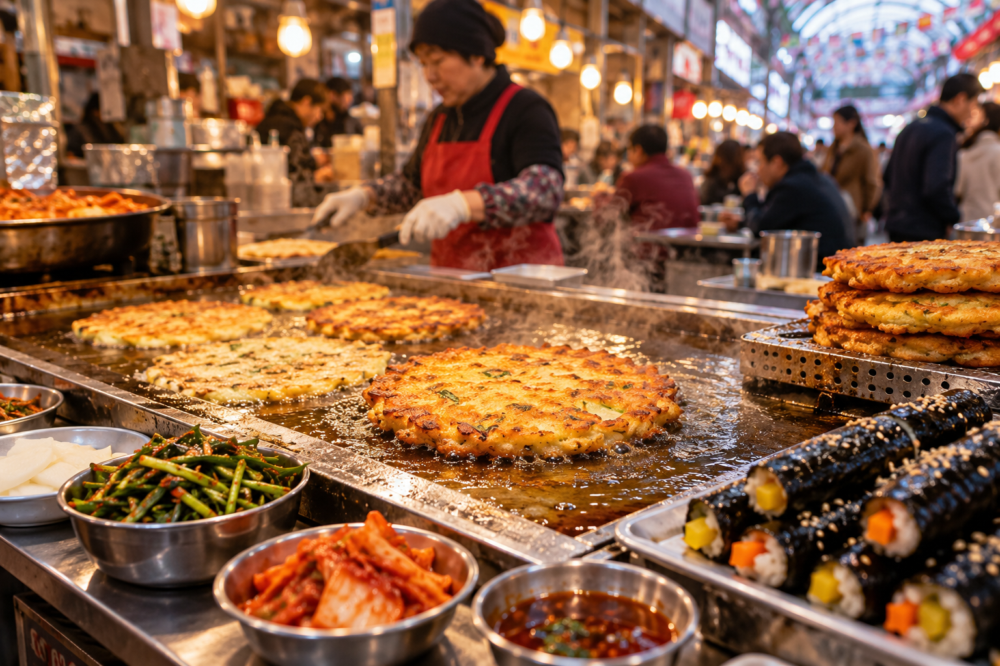
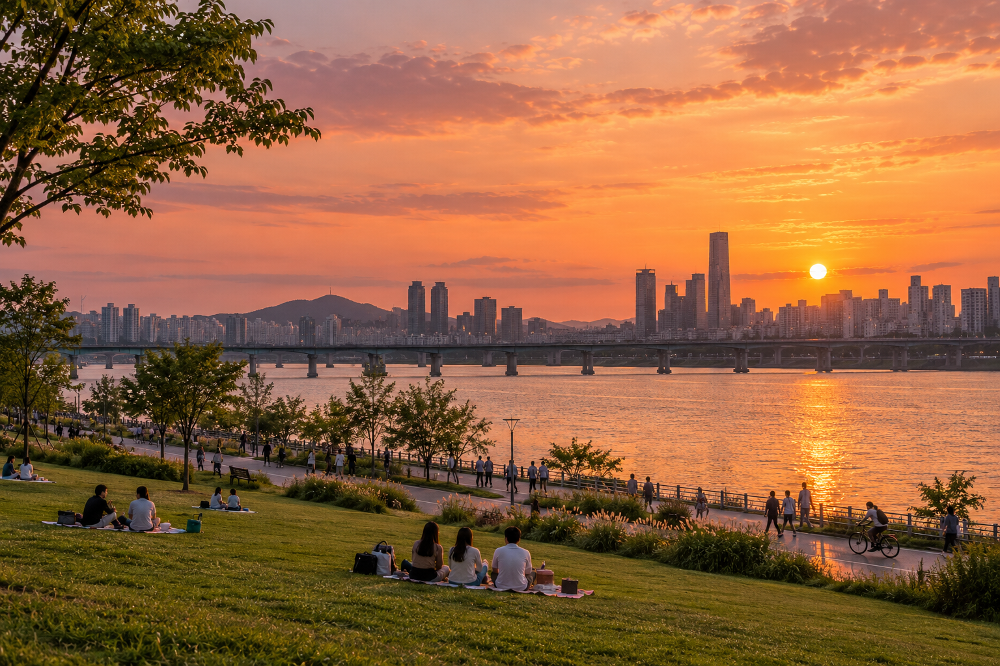

서울에서 만나는 나만의 여행
궁궐의 아침부터
한강의 저녁까지
궁궐을 걷고, 골목을 맛보고,
한강에서 하루를 마무리하세요.
Walk. Taste. Stay a little longer.
나의 취향으로 고르는 서울의 일곱 장면
02CHOOSE YOUR SEOUL
좋아하는 경험으로 채우는 서울
음식과 쇼핑, 역사와 도시 풍경. 원하는 만큼 조합해 보세요.
2025 서울관광 실태조사 · 외국인 6,067명 · 복수응답
활동 경험률이며 소비 비중이나 만족률을 뜻하지 않습니다.
동네를 둘러보는 쇼핑
명동의 거리부터 성수의 작은 상점까지
그래프에 마우스를 올려보세요03HISTORY & CULTURE
역사를 걷고, 문화를 직접 경험하다
연도를 누르면 유산의 풍경이 바뀝니다
오늘은 무엇을 해볼까요? 클릭해 자세히 보기 ↗
한복을 입고 궁궐 산책
복식과 사진으로 기억하는 서울의 역사.
궁궐 관람 방식과 한복 대여 조건을 확인하세요.
출처: UNESCO · 비짓서울 · 서울컬처라운지
체험 프로그램의 운영일·언어·예약은 방문 날짜에 맞춰 확인하세요.
04TASTE THE NEIGHBORHOOD
동네를 고르면, 서울의 맛이 따라온다
마우스를 올려 풍경을 바꾸고, 동네를 클릭해 여행 이야기를 열어보세요.

시장에서 맛보는 서울
빈대떡과 김밥, 모둠전을 고르고
눈앞에서 조리하는 시장의 풍경을 즐겨보세요.
메뉴는 공식 관광안내의 대표 사례이며 외국인 주문량 순위가 아닙니다. 식재료와 식단 조건은 음식점별로 확인하세요.
출처: 2025 서울관광 실태조사 · 비짓서울 · 한국관광공사
05MAKE TIME FOR THE RIVER
하루의 끝에는, 한강과 서울의 밤

강변에 남겨두는 여유
한강공원 · 해 질 무렵의 산책
마우스를 올려 풍경 보기 · 클릭해 자세히 보기 ↗
날씨와 계절에 맞춰 산책이나 야외 활동을 골라보세요.
출처: 서울특별시 한강공원 · 남산서울타워 · 서울달 안내. 서울달과 야외 활동은 기상·운영 조건에 따라 달라집니다.
06THREE DAYS, YOUR PACE
처음 만나는 서울, 하루에 한 가지 주제
가까운 권역을 묶어 시작하는 3일 코스 제안
경복궁
왕궁의 공간을 천천히 걷기
인사동 또는 서촌
공예와 골목의 분위기 즐기기
광장시장·청계천
시장 식사 후 물길 따라 산책
궁궐 휴궁일에는 방문 장소를 바꾸고, 관람·식사·이동 시간을 충분히 두세요.
보고서 기반 제안 코스 · 확정 여행상품이나 실측 이동시간표가 아닙니다. 권역 간 이동은 교통편과 출발지에 맞춰 확인하세요.
07YOUR NEXT CHAPTER
서울에서 해보고 싶은
한 가지를 골라보세요
그 경험에서 나만의 서울 여행이 시작됩니다.
공식 여행 지도와 가이드북 ↗Your Seoul begins with one experience.
이동 경로 확인
공항에서 숙소까지, 역 이름과 출구까지
문화 체험 예약
원하는 수업의 운영일과 언어 확인
이야기와 함께 걷기
서울 도보해설관광 코스와 예약
나에게 맞는 이동 편의
방문 장소별 접근성과 편의시설 확인
여행일에 맞춰 운영시간·예약 조건·교통 정보를 확인하세요.
공식 관광 안내로 연결됩니다.
작성 시간 2026/10/17/14시 · 자료 기준 2026년 10월 16일